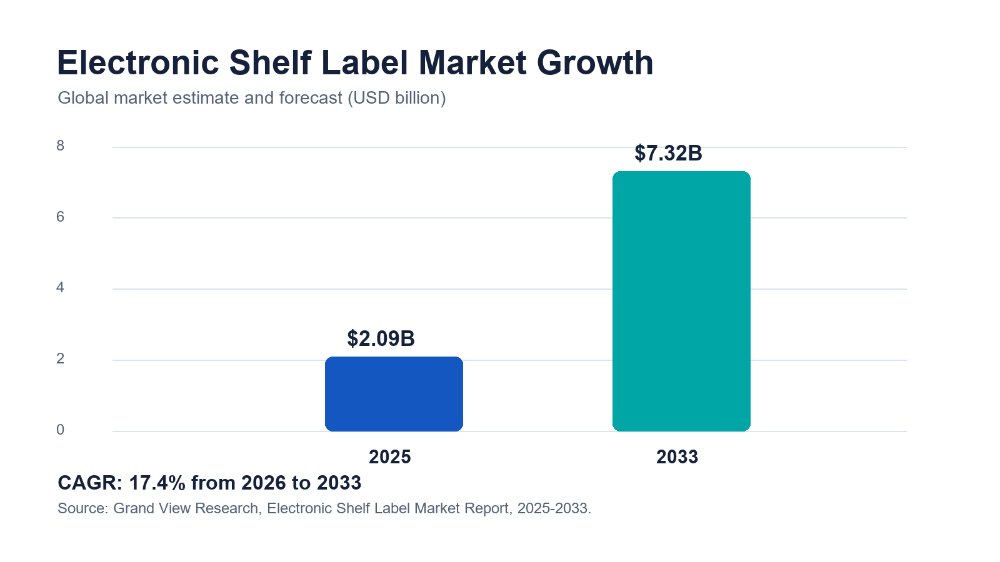
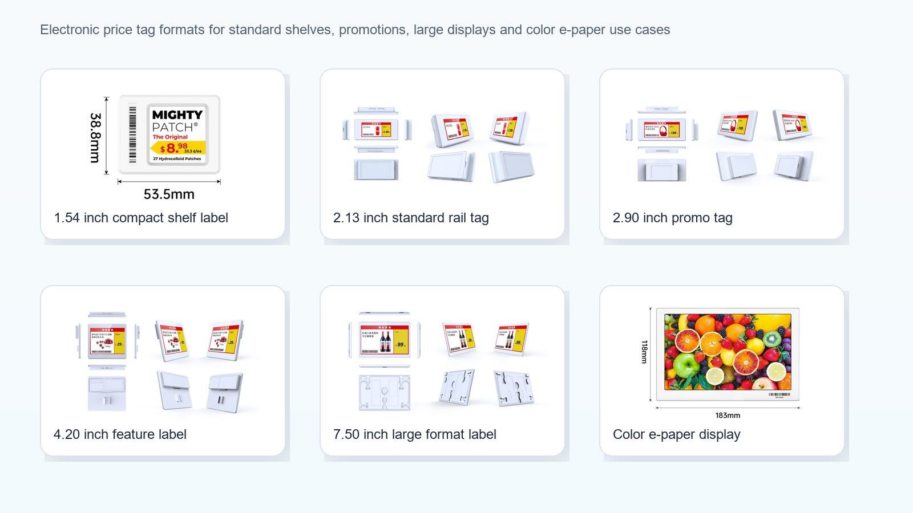
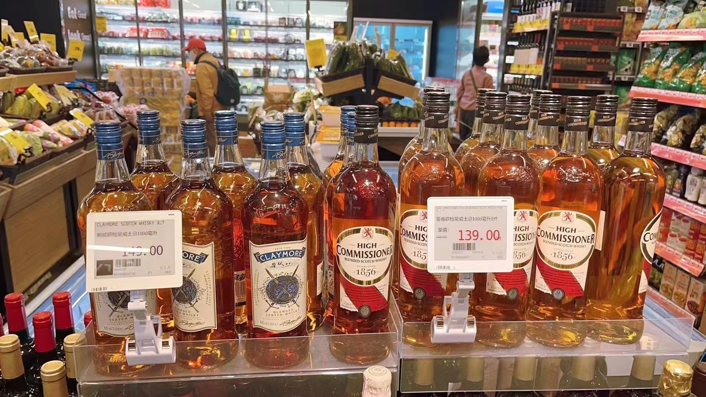
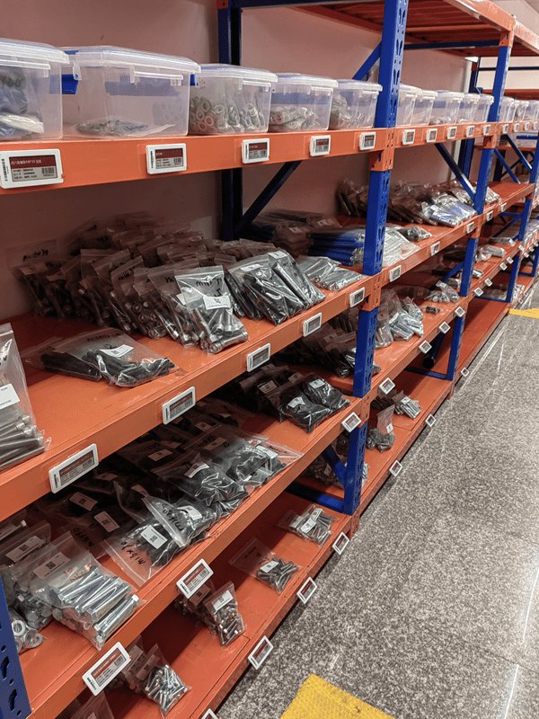

If you are comparing electronic shelf labels, digital price tags or ESL tags, the display and size are only the visible part. Communication technology, battery life, software integration and support usually decide whether a rollout succeeds. This guide breaks down every common type so you can match the label to the shelf. For the broader category overview, see our guide to electronic price tags.
| Metric | Figure | Source |
|---|---|---|
| Global ESL market, 2025 | approx. USD 2.09 billion | Grand View Research |
| Projected market, 2033 | approx. USD 7.32 billion | Grand View Research |
| Forecast growth | 17.4% CAGR (2026–2033) | Grand View Research |
| Alternate estimate | approx. USD 1.97B (2025), 13.9% CAGR to 2030 | Mordor Intelligence |

What Are Electronic Shelf Labels?
What is an electronic shelf label in simple terms?
An electronic shelf label is a small, battery-powered digital display fixed to a shelf edge or product that shows the price and product information and updates wirelessly from a central system. Instead of printing and hand-placing paper tickets, staff change prices in software and the labels refresh automatically. Most ESL tags use e-paper (e-ink) screens because the image stays visible without power and is easy to read under store lighting.
The terms overlap in search and in the trade: electronic shelf label, digital price tag, ESL label, digital shelf tag and e-ink price tag usually describe the same category of product. Retailers adopt them to cut re-tagging labor, keep the shelf price and checkout price in sync, and support dynamic pricing, QR codes and promotions. For a deeper look at how ESLs compare with printed tickets, read ESL vs paper labels.
How Do Electronic Shelf Labels Work?
What are the three parts of an ESL system?
An ESL system has three parts: the tags, a gateway or access point, and management software. You edit prices in the software (often linked to POS, ERP or a pricing engine); the server sends the update over a low-power wireless network to gateways installed in the store; the gateways push the new image to each tag, which redraws its e-paper screen and then returns to sleep to save battery.
Why do most ESLs use e-paper?
E-paper (also called e-ink) is bistable: it only draws power when the image changes, so a tag can run for years on a coin cell or thin battery. It is also reflective, so it reads like printed paper under store lighting without a glowing backlight. That combination of low power and paper-like readability is why e-paper dominates the e-ink price tag category. Battery life still depends on size, color, update frequency and temperature — ask suppliers for tested figures, not best-case numbers. See our note on ESL battery life.
External reference: E Ink — ePaper benefits and display characteristics.
Do electronic shelf labels use store Wi-Fi?
Usually no. Most systems use a dedicated gateway with a proprietary 2.4 GHz protocol or a Bluetooth-based network rather than guest Wi-Fi, which keeps updates reliable across thousands of tags. The wireless design is one of the main ways ESL types differ, covered below.
Types Of Electronic Shelf Labels By Display Technology
What is the difference between monochrome, color and LCD ESLs?
The display is the first way to sort ESL tags. There are three practical groups, and most retailers use a mix.
| Display type | What it shows | Best for | Trade-off |
|---|---|---|---|
| Monochrome e-paper (black/white/red) | Price, name, unit price, barcode, basic promo flag. | High-SKU grocery, pharmacy, convenience. | Limited color; fine for most price labels. |
| Full-color e-paper | Brand colors, promo badges, energy labels, images. | Fresh food, wine, cosmetics, electronics, fashion. | Higher unit cost and slower refresh. |
| Segment / LCD price tags | Fixed digits and simple fields. | Very low-cost, price-only shelves. | No graphics; always-on power draw. |
Most rollouts are still monochrome e-paper with a third spot color (usually red) for promotions, because it covers the majority of SKUs at the lowest cost. Color e-paper — including newer six-color panels such as E Ink Spectra — is worth the premium where the shelf sells on appearance, brand or promotion visibility, as on the fresh-produce display above.
Types Of Electronic Shelf Labels By Size
ESL sizes are named by screen diagonal in inches, from about 1.54″ up to 13.3″. Small tags carry price and name for dense shelves; larger tags add QR codes, promotions, images and specifications, or serve as shelf-edge and warehouse displays.

Which ESL size should I use?
| Size | Typical content | Common use |
|---|---|---|
| 1.54″ / 2.13″ | Price, product name, unit price, barcode. | Dense grocery and pharmacy shelves, small SKUs. |
| 2.66″ / 2.9″ | Price + promo badge, QR code, extra fields. | General supermarket shelves, health & beauty. |
| 4.2″ | Images, energy label, multiple prices, specs. | Electronics, wine, cosmetics, fresh food. |
| 7.5″ | Rich product info, comparison, promotions. | Feature shelves, appliances, end-caps. |
| 10.2″ / 13.3″ | Shelf-edge signage, category and warehouse data. | Warehouse bins, promotions, digital shelf edge. |
Source: AiESL size range. Exact dimensions and resolutions vary by model; see AiESL products or request a spec sheet for your SKUs.
Types Of Electronic Shelf Labels By Communication Technology
Which wireless system is best for ESLs?
There is no single best network — the right choice depends on fleet size and store layout. Large chains usually favor a mature 2.4 GHz proprietary network for control over thousands of tags, while newer or mixed deployments look at Bluetooth, which now has a standardized ESL profile from the Bluetooth SIG.
| Technology | Strengths | Watch-outs / best fit |
|---|---|---|
| 2.4 GHz proprietary | Mature, scalable, strong gateway control. | Vendor lock-in; large grocery, pharmacy, DIY chains. |
| Bluetooth / BLE (SIG ESL profile) | Standardization, familiar ecosystem. | Coverage and battery depend on design; newer sites. |
| NFC-assisted | Simple tap-to-bind and setup. | Short range; pairing and configuration, not live updates. |
| Infrared (legacy) | Precise one-to-one targeting. | Line-of-sight; older or specialized systems. |
External reference: Bluetooth SIG Electronic Shelf Label Profile.
Types Of Electronic Shelf Labels By Retail Use Case
Finally, ESLs are often specified by where they are used, because each environment changes the size, color and durability you need.
How do supermarkets use electronic shelf labels?
Supermarkets use ESLs to manage huge SKU counts, daily promotions, markdowns and fresh-food pricing while keeping the shelf and checkout price identical. Monochrome tags with a red promo color cover most aisles; color tags go on fresh food and premium categories. See our supermarket ESL solution.

What ESLs do warehouses and stockrooms use?
Warehouses use larger monochrome ESLs as bin, rack and inventory labels, not just price tags. They show SKU, location, quantity and pick data, and update as stock moves — which is why warehouse shelf labels are one of the highest-value ESL use cases. Durability and clear text at a distance matter more than color. Explore the warehouse ESL solution.

Where else are electronic shelf labels used?
- Fresh food and cold chain: color tags with tested low-temperature performance and stronger housings for chilled and frozen aisles.
- Electronics and DIY: larger 4.2″–7.5″ tags for specifications, comparisons, stock status and QR codes.
- Fashion and specialty retail: compact or color tags for brand presentation on apparel, footwear, luggage and cosmetics.
- Pharmacy and convenience: small monochrome tags for dense, frequently changing shelves — see ESL for pharmacy.
How Much Do Electronic Shelf Labels Cost?
What drives the cost of an ESL project?
Per-tag hardware commonly ranges from a few dollars for small monochrome labels to well over ten dollars for large color displays, before gateways, software, installation and support. A full project cost depends on tag count, size, color, gateways, integration and services, so compare total system cost — not just the sticker price of one label.
| Cost driver | Why it matters | Ask the supplier |
|---|---|---|
| Tag size & color | Larger and color tags cost more per unit. | Unit price by size and color at my volume? |
| Gateways / access points | Store size and layout set how many you need. | How many gateways for my floor plan? |
| Software & integration | POS/ERP integration drives the real value. | Is POS/ERP integration included? |
| Battery & durability | Cold and frequent updates cut battery life. | Tested battery life at my update rate? |
For a dedicated cost model with worked examples, read how much electronic shelf labels cost.
How To Choose The Right Type Of Electronic Shelf Label
Use a short checklist to match the type to your shelves before you request quotes:
- Count your SKUs and price changes. High volume and frequent changes favor monochrome e-paper and a scalable network.
- Map the shelf environment. Fresh, frozen and premium shelves may need color or low-temperature tags.
- Pick sizes by content. Price-only shelves use small tags; spec-heavy or promo shelves need 4.2″ and up.
- Choose the network for your fleet. Large chains lean 2.4 GHz; newer sites consider Bluetooth/BLE.
- Confirm integration and support. POS/ERP integration, templates and multi-year support decide the outcome.
- Pilot before scaling. Test one live, difficult category and measure update success and battery.
The main benefits are lower re-tagging labor, accurate shelf-to-checkout pricing, faster promotions and a digital shelf edge for QR codes and inventory signals. Retailers such as Walmart have expanded digital shelf labels across stores to speed up price changes and free staff for customer-facing work. To see the hardware range, compare AiESL products or browse customer cases.
Source: Walmart Corporate News, “Digital shelf labels are a win for customers and associates,” June 6, 2024.